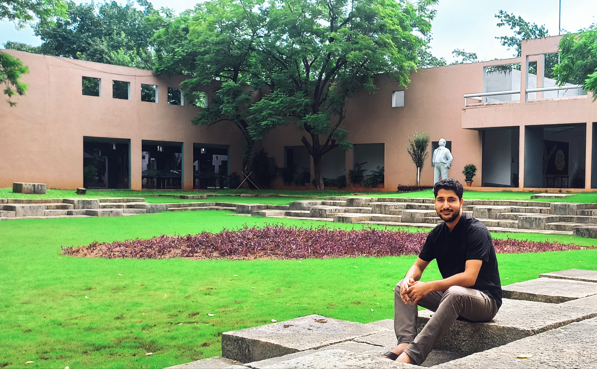

About Me
Hi, I’m Ritish Kumar, this is my webpage
I'm doing my Ph.D. in astronomy from Central University of Himachal Pradesh
My Research Interest Includes:
- Quasars Astronomy
- SED Modeling
- Circum-Galactic Medium (CGM)
- Intergalactic Medium (IGM) & Cosmology
My Contribution in the Field:
- Evidence of underdeveloped torus and broad-line region of weak emission line quasars based on their spectral energy distribution, Kumar R., Chand H., Joshi R., 2023, MNRAS, 519, 3656.
Current Projects:
- Understanding the difference between the nature of accretion disk of Weak emission line Quasars and normal Quasars
- Do there exist radio-quiet counterpart of BL Lac objects?
- Extreme outflows in AGNs and associated systems
- Does True Type-II AGNs exits?
